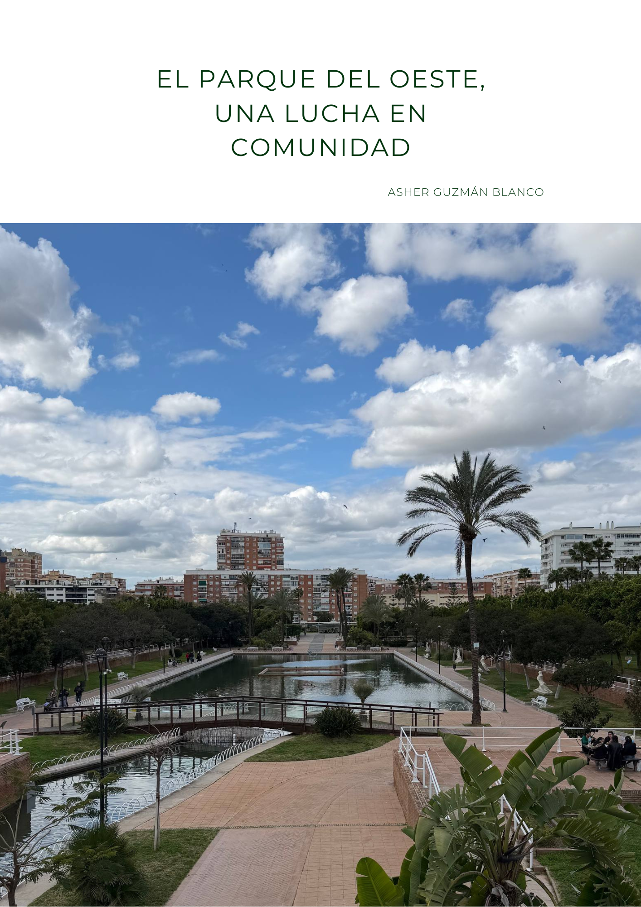

El Festival de las Linternas
Un evento privado que mercantilizó el espacio público, amenazando a los barrios y su arquitectura.
Crónica de una ciudad viva
Historias, estrategias y aprendizajes de organización social para defender el territorio, construir poder popular y sostener la memoria colectiva.

¿Qué ocurrió?
Un evento privado que mercantilizó el espacio público, amenazando a los barrios y su arquitectura.
Unión espontánea de vecinas y vecinos para defender lo público y lo común, de forma incansable y empática.
Creando conciencia sobre los espacios públicos y recuperando la voz para participar en nuestra ciudad, Málaga.
Uso y distribución
Esta obra se comparte bajo la licencia Creative Commons Attribution-NonCommercial-ShareAlike 4.0 International (CC BY-NC-SA 4.0). Puedes copiar, redistribuir y adaptar el material con atribución, sin uso comercial y manteniendo la misma licencia.